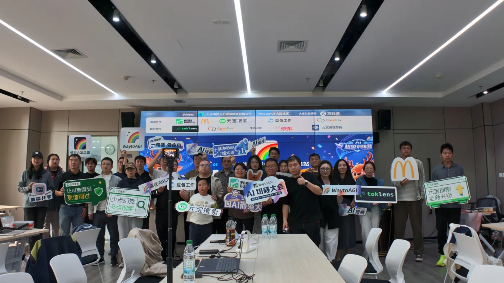

亲子探索
小小探索家 · 大连博物馆 Adventure
从地图进入博物馆，把发现任务与徽章收集结合起来，面向儿童与亲子用户。
在大连，把对 AI 的好奇变成一次次见面、尝试和创作。从 2025 年秋天的第一次见面，到 1024 超能 Coding 周末，这里留下了七期活动的照片和作品。
从历期活动看起 ↗逛逛作品展台
从交流新工具，到动手做产品，再到城市文化与影像创作。点开一张卡片，回到那一期的主题与现场。
约 30 位参与者，20 个现场展示项目，其中 1 个仅展示项目。从行业工具到个人创意，作品给出了不同的解法。
10 月作品按正式提交编号归档。点击查看截图；获奖标签来自活动回顾中的本地奖项记录。
7 月组织者准备的网页种子案例，用来打开思路，不参与现场投票。
从地图进入博物馆，把发现任务与徽章收集结合起来，面向儿童与亲子用户。
以城市时间线与文物图鉴，串起聚落、港口记忆与海洋自然科学。
从大连区域历史出发，尝试章节、证据卡与选择结合的互动历史体验。
查看留存原型截图 ↗相册支持按活动和照片编号筛选。点击放大，可用左右方向键浏览，也可以下载当前浏览副本。
收录从 2025 年 10 月第一期到 2026 年 10 月的七期记录。作品展台展示 2026 年 10 月的正式提交，以及 7 月活动准备的三个创作案例。